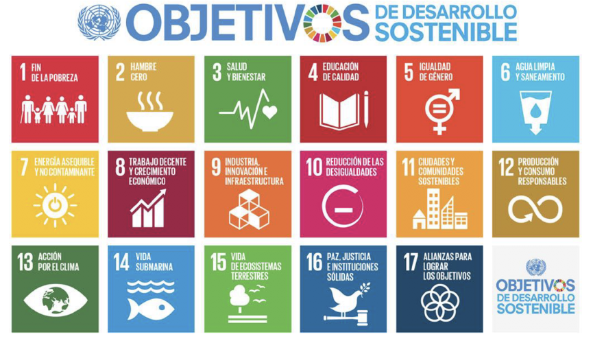
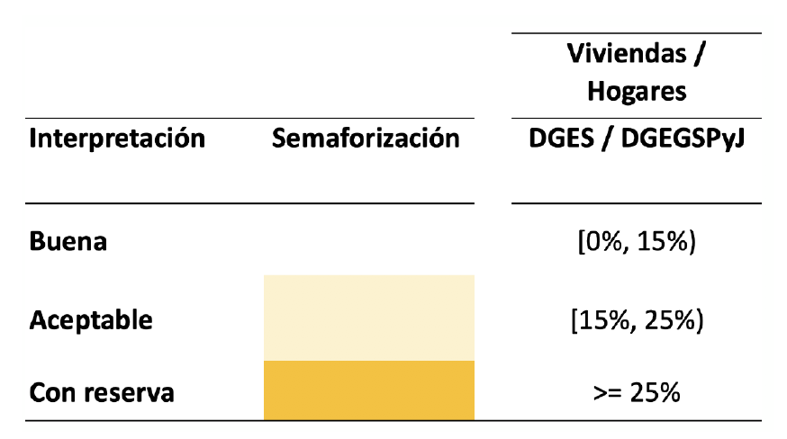

<!DOCTYPE html>
<html lang="en"><head>
<script src="SAE_ODS_0_files/libs/clipboard/clipboard.min.js"></script>
<script src="SAE_ODS_0_files/libs/quarto-html/tabby.min.js"></script>
<script src="SAE_ODS_0_files/libs/quarto-html/popper.min.js"></script>
<script src="SAE_ODS_0_files/libs/quarto-html/tippy.umd.min.js"></script>
<link href="SAE_ODS_0_files/libs/quarto-html/tippy.css" rel="stylesheet">
<link href="SAE_ODS_0_files/libs/quarto-html/light-border.css" rel="stylesheet">
<link href="SAE_ODS_0_files/libs/quarto-html/quarto-syntax-highlighting-37eea08aefeeee20ff55810ff984fec1.css" rel="stylesheet" id="quarto-text-highlighting-styles"><meta charset="utf-8">
  <meta name="generator" content="quarto-1.7.32">

  <meta name="author" content="Andrés Gutierrez y Stalyn Guerrero">
  <title>Agenda 2030 y Modelos SAE</title>
  <meta name="apple-mobile-web-app-capable" content="yes">
  <meta name="apple-mobile-web-app-status-bar-style" content="black-translucent">
  <meta name="viewport" content="width=device-width, initial-scale=1.0, maximum-scale=1.0, user-scalable=no, minimal-ui">
  <link rel="stylesheet" href="SAE_ODS_0_files/libs/revealjs/dist/reset.css">
  <link rel="stylesheet" href="SAE_ODS_0_files/libs/revealjs/dist/reveal.css">
  <style>
    code{white-space: pre-wrap;}
    span.smallcaps{font-variant: small-caps;}
    div.columns{display: flex; gap: min(4vw, 1.5em);}
    div.column{flex: auto; overflow-x: auto;}
    div.hanging-indent{margin-left: 1.5em; text-indent: -1.5em;}
    ul.task-list{list-style: none;}
    ul.task-list li input[type="checkbox"] {
      width: 0.8em;
      margin: 0 0.8em 0.2em -1em; /* quarto-specific, see https://github.com/quarto-dev/quarto-cli/issues/4556 */ 
      vertical-align: middle;
    }
    /* CSS for citations */
    div.csl-bib-body { }
    div.csl-entry {
      clear: both;
      margin-bottom: 0em;
    }
    .hanging-indent div.csl-entry {
      margin-left:2em;
      text-indent:-2em;
    }
    div.csl-left-margin {
      min-width:2em;
      float:left;
    }
    div.csl-right-inline {
      margin-left:2em;
      padding-left:1em;
    }
    div.csl-indent {
      margin-left: 2em;
    }  </style>
  <link rel="stylesheet" href="SAE_ODS_0_files/libs/revealjs/dist/theme/quarto-2c1b5f745a11cfad616ebade4a4a7d24.css">
  <link rel="stylesheet" href="styles.css">
  <link href="SAE_ODS_0_files/libs/revealjs/plugin/quarto-line-highlight/line-highlight.css" rel="stylesheet">
  <link href="SAE_ODS_0_files/libs/revealjs/plugin/reveal-menu/menu.css" rel="stylesheet">
  <link href="SAE_ODS_0_files/libs/revealjs/plugin/reveal-menu/quarto-menu.css" rel="stylesheet">
  <link href="SAE_ODS_0_files/libs/revealjs/plugin/quarto-support/footer.css" rel="stylesheet">
  <style type="text/css">
    .reveal div.sourceCode {
      margin: 0;
      overflow: auto;
    }
    .reveal div.hanging-indent {
      margin-left: 1em;
      text-indent: -1em;
    }
    .reveal .slide:not(.center) {
      height: 100%;
    }
    .reveal .slide.scrollable {
      overflow-y: auto;
    }
    .reveal .footnotes {
      height: 100%;
      overflow-y: auto;
    }
    .reveal .slide .absolute {
      position: absolute;
      display: block;
    }
    .reveal .footnotes ol {
      counter-reset: ol;
      list-style-type: none; 
      margin-left: 0;
    }
    .reveal .footnotes ol li:before {
      counter-increment: ol;
      content: counter(ol) ". "; 
    }
    .reveal .footnotes ol li > p:first-child {
      display: inline-block;
    }
    .reveal .slide ul,
    .reveal .slide ol {
      margin-bottom: 0.5em;
    }
    .reveal .slide ul li,
    .reveal .slide ol li {
      margin-top: 0.4em;
      margin-bottom: 0.2em;
    }
    .reveal .slide ul[role="tablist"] li {
      margin-bottom: 0;
    }
    .reveal .slide ul li > *:first-child,
    .reveal .slide ol li > *:first-child {
      margin-block-start: 0;
    }
    .reveal .slide ul li > *:last-child,
    .reveal .slide ol li > *:last-child {
      margin-block-end: 0;
    }
    .reveal .slide .columns:nth-child(3) {
      margin-block-start: 0.8em;
    }
    .reveal blockquote {
      box-shadow: none;
    }
    .reveal .tippy-content>* {
      margin-top: 0.2em;
      margin-bottom: 0.7em;
    }
    .reveal .tippy-content>*:last-child {
      margin-bottom: 0.2em;
    }
    .reveal .slide > img.stretch.quarto-figure-center,
    .reveal .slide > img.r-stretch.quarto-figure-center {
      display: block;
      margin-left: auto;
      margin-right: auto; 
    }
    .reveal .slide > img.stretch.quarto-figure-left,
    .reveal .slide > img.r-stretch.quarto-figure-left  {
      display: block;
      margin-left: 0;
      margin-right: auto; 
    }
    .reveal .slide > img.stretch.quarto-figure-right,
    .reveal .slide > img.r-stretch.quarto-figure-right  {
      display: block;
      margin-left: auto;
      margin-right: 0; 
    }
  </style>
</head>
<body class="quarto-light">
  <div class="reveal">
    <div class="slides">

<section id="title-slide" class="quarto-title-block center">
  <h1 class="title">Agenda 2030 y Modelos SAE</h1>
  <p class="subtitle">Estimación en Áreas Pequeñas (SAE)</p>

<div class="quarto-title-authors">
<div class="quarto-title-author">
<div class="quarto-title-author-name">
Andrés Gutierrez y Stalyn Guerrero 
</div>
</div>
</div>

  <p class="date">Invalid Date</p>
</section>
<section>
<section id="agenda-2030-y-objetivos-de-desarrollo-sostenible" class="title-slide slide level1 center">
<h1>Agenda 2030 y Objetivos de Desarrollo Sostenible</h1>

</section>
<section id="qué-es-la-agenda-2030" class="slide level2">
<h2>¿Qué es la Agenda 2030?</h2>
<p>La <strong>Agenda 2030 para el Desarrollo Sostenible</strong> es un compromiso global adoptado por los Estados Miembros de las Naciones Unidas en 2015. Establece un marco universal con <strong>17 Objetivos de Desarrollo Sostenible (ODS)</strong> y <strong>169 metas</strong> que buscan erradicar la pobreza, proteger el planeta y asegurar la prosperidad para todos.</p>
</section>
<section id="principios-de-la-agenda-2030" class="slide level2">
<h2>Principios de la Agenda 2030</h2>
<ul>
<li><strong>Universalidad:</strong> aplica a todos los países, independientemente de su nivel de desarrollo.<br>
</li>
<li><strong>Integración:</strong> los objetivos están interrelacionados y deben abordarse de manera conjunta.<br>
</li>
<li><strong>No dejar a nadie atrás:</strong> exige la desagregación de los datos para reflejar las desigualdades dentro de los países.</li>
</ul>
<div class="callout callout-tip callout-titled callout-style-default">
<div class="callout-body">
<div class="callout-title">
<div class="callout-icon-container">
<i class="callout-icon"></i>
</div>
<p><strong>Resolución de la Asamblea General de la ONU 68/261:</strong></p>
</div>
<div class="callout-content">
<p>“Los indicadores de los Objetivos de Desarrollo Sostenible deberán desglosarse, siempre que sea pertinente, por ingreso, sexo, edad, raza, etnicidad, estado migratorio, discapacidad y ubicación geográfica, u otras características, de conformidad con los Principios Fundamentales de las Estadísticas Oficiales.”</p>
</div>
</div>
</div>
</section>
<section id="objetivos-de-desarrollo-sostenible" class="slide level2">
<h2>Objetivos de Desarrollo Sostenible</h2>

</section>
<section id="ejemplos-de-metas-relevantes" class="slide level2">
<h2>Ejemplos de Metas Relevantes</h2>
<ul>
<li><p><strong>ODS 1 (Fin de la pobreza):</strong> Erradicar la pobreza extrema y reducir a la mitad la pobreza en todas sus dimensiones según las definiciones nacionales.</p></li>
<li><p><strong>ODS 2 (Hambre cero):</strong> Asegurar el acceso a una alimentación sana, nutritiva y suficiente durante todo el año.</p></li>
<li><p><strong>ODS 8 (Trabajo decente):</strong> Lograr el empleo pleno y productivo, con igualdad salarial por trabajo de igual valor.</p></li>
<li><p><strong>ODS 17 (Alianzas):</strong> Aumentar la disponibilidad de datos desagregados de alta calidad, oportunos y fiables.</p></li>
</ul>
</section>
<section id="desagregación-de-los-indicadores" class="slide level2">
<h2>Desagregación de los indicadores</h2>
<p>La desagregación estadística es esencial para <strong>identificar desigualdades ocultas</strong>.<br>
Ejemplo: estimar la pobreza o el desempleo por sexo, edad, territorio o etnia, permite diseñar políticas más focalizadas.</p>
</section>
<section id="principios-fundamentales-de-las-estadísticas-oficiales" class="slide level2">
<h2>Principios fundamentales de las estadísticas oficiales</h2>
<div class="callout callout-tip callout-titled callout-style-default">
<div class="callout-body">
<div class="callout-title">
<div class="callout-icon-container">
<i class="callout-icon"></i>
</div>
<p><strong>Resolución de la Asamblea General de la ONU 68/261:</strong></p>
</div>
<div class="callout-content">
<p>La confianza esencial del público en la integridad de los sistemas estadísticos oficiales y la credibilidad que este otorga a las estadísticas dependen en gran medida del respeto de los valores y principios fundamentales que son la base de toda sociedad que procura entenderse a sí misma y respetar los derechos de sus miembros y que, en este contexto, son cruciales la independencia profesional y la rendición de cuentas de los organismos de estadística.</p>
</div>
</div>
</div>
</section></section>
<section>
<section id="limitaciones-de-las-encuestas" class="title-slide slide level1 center">
<h1>Limitaciones de las encuestas</h1>

</section>
<section id="restricciones-en-la-producción-de-indicadores-ods" class="slide level2">
<h2>Restricciones en la producción de indicadores ODS</h2>
<ul>
<li><p>Los tamaños muestrales de las encuestas suelen ser <strong>suficientes a nivel nacional o regional</strong>, pero <strong>no para áreas pequeñas</strong>.</p></li>
<li><p>En subpoblaciones (como municipios o grupos étnicos), los errores de muestreo aumentan significativamente.</p></li>
</ul>
</section>
<section id="el-coeficiente-de-variación-cv" class="slide level2">
<h2>El coeficiente de variación (CV)</h2>
<p>El CV es una medida relativa de precisión: <span class="math display">\[
    CV(\hat{\theta}) = \frac{SE(\hat{\theta})}{\hat{\theta}} \times 100
  \]</span></p>
</section>
<section id="uso-del-coeficiente-de-variación" class="slide level2">
<h2>Uso del coeficiente de variación</h2>
<p>Sarndal et. al.(2003) afirma que un estadístico puede expresar su opinión acerca de que un coeficiente de variación del 2% es bueno, considerando las restricciones de la encuesta, mientras que un valor del coeficiente de variación de 9% puede ser considerado inaceptable.</p>
<p>De esta forma, muchos institutos nacionales de estadística alrededor del mundo han considerado que las precisiones de las estadísticas resultantes de una encuesta estén supeditadas al comportamiento de su coeficiente de variación.</p>
</section>
<section id="alertas-sobre-el-coeficiente-de-variación" class="slide level2">
<h2>Alertas sobre el coeficiente de variación</h2>

<p class="caption">Fuente: INEGI</p></section>
<section id="dominios-de-estudio-y-subpoblaciones-de-interés" class="slide level2">
<h2>Dominios de estudio y subpoblaciones de interés</h2>
<p>Una encuesta se planea con el fin de generar información precisa y confiable en los dominios de estudio que se han predefinido. Sin embargo, existen subgrupos poblacionales que la encuesta no abordó en su diseño, y sobre los cuales se quisiera una mayor precisión.</p>
<ul>
<li><p>Incidencia de la pobreza desagregado por departamento oprovincia (tamaño de muestra conocido y planificado).</p></li>
<li><p>Tasa de desocupación desagregada por sexo (tamaño de muestra aleatorio, pero planificado).</p></li>
<li><p>Tasa de asistencia neta estudiantil en primaria desagregada por quintiles de ingreso (tamaño de muestra aleatorio).</p></li>
</ul>
</section>
<section id="precisión-de-los-estimadores" class="slide level2">
<h2>Precisión de los estimadores</h2>
<p>Debido a que una encuesta es una investigación parcial sobre una población finita, es necesario saber que:</p>
<ul>
<li><p>A partir de una encuesta, no se calculan indicadores, sino que se estiman con ayuda de los datos de la encuesta.</p></li>
<li><p>Es necesario calcular el grado de error que se comete al no poder realizar una investigación exhaustiva. Este error es conocido como el error de muestreo.</p></li>
<li><p>La precisión de un estimador está supeditada al intervalo de confianza.</p></li>
</ul>
<p>Entre más angosto sea el intervalo, más precisión se genera y por ende se tiene un menor error de muestreo.</p>
</section>
<section id="el-intervalo-de-confianza-en-subpoblaciones" class="slide level2">
<h2>El intervalo de confianza en subpoblaciones</h2>
<p>Si el parámetro de interés sobre el cual se busca realizar la inferencia es d , y se ha definido una subpoblación de interés Ud , entonces un intervalo del 95% de confianza sobre esa subpoblación está dado por la siguiente expresión:</p>
<p><span class="math display">\[
(\hat{\theta} - t_{0.975}\times se(\hat{\theta}) , \hat{\theta} + t_{0.975}\times se(\hat{\theta}) )
\]</span></p>
<p>El uso del coeficiente de variación como indicador de la confiabilidad de las estadísticas provenientes de encuestas de hogares debería ser complementado con algunas otras medidas que permitan crear reglas de confiabilidad y precisión.</p>
</section>
<section id="el-intervalo-de-confianza" class="slide level2">
<h2>El intervalo de confianza</h2>
<p>Nótese que la longitud de los intervalos de confianza induce la seguridad de que un estimador es preciso:</p>
<ul>
<li><p>La incidencia de la pobreza en el departamento del país se estimó en 5.2 %, con un intervalo de confianza de (5.15 %, 5.25 %).</p></li>
<li><p>La tasa de desocupación en el país para los hombres se ubicó en en 7.5 %, con un intervalo de confianza de (7.1 %, 7.9 %); mientras que para las mujeres se ubicó en 9.2 %, con intervalo de confianza de (8.8 %, 9.6 %).</p></li>
<li><p>La tasa de asistencia neta estudiantil en primaria para el último quintil de ingreso se estimó en 85 %, con un intervalo de confianza de (48.2 %, 100.0 %).</p></li>
</ul>
</section>
<section id="el-tamaño-de-muestra" class="slide level2">
<h2>El tamaño de muestra</h2>
<ul>
<li><p>El tamaño de muestra afecta de manera indirecta la amplitud del intervalo de confianza, a través del error estándar que generalmente decrece a medida que el tamaño de muestra se hace más grande.</p></li>
<li><p>Un tamaño de muestra adecuado garantiza la convergencia en distribución de los estimadores a la distribución teórica de donde se calculan los percentiles.</p></li>
<li><p>Por ejemplo, es posible plantear que todas las estimaciones basadas en un tamaño de muestra menor a un umbral predefinido deberían ser suprimidas o marcadas como no confiables.</p></li>
</ul>
</section>
<section id="el-tamaño-de-muestra-efectivo" class="slide level2">
<h2>El tamaño de muestra efectivo</h2>
<ul>
<li><p>En las encuestas de hogares, con diseños de muestreo complejos, no existe una sucesión de variables que sean independientes e identicamente distribuidas.</p></li>
<li><p>La muestra <span class="math inline">\(y_1,... , y_n\)</span> no es un vector en el espacio n-dimensional, donde se asume que cada componente del vector puede variar por sí mismo.</p></li>
<li><p>La dimensión final del vector <span class="math inline">\(y_1,... , y_n\)</span> es mucho menor que <span class="math inline">\(n\)</span>, puesto que existe una forma jerárquica en la selección de los hogares y a la interrelación de la variable de interés con las UPMs</p></li>
</ul>
</section>
<section id="el-tamaño-de-muestra-efectivo-1" class="slide level2">
<h2>El tamaño de muestra efectivo</h2>
<p>El tamaño de muestra efectivo se define como sigue:</p>
<p><span class="math display">\[
n_{efectivo} = \frac{n}{Deff}
\]</span></p>
<p>En donde Deff es el efecto de diseño que depende de: 1. El número de encuestas promedio que se realizaron en cada UPM. 2. La correlación existente entre la variable de interés y las mismas UPMs.</p>
<p>Es posible considerar que, si el tamaño de muestra efectivo no es mayor a un umbral, entonces la cifra no debería ser considerada para publicación.</p>
</section>
<section id="grados-de-libertad" class="slide level2">
<h2>Grados de libertad</h2>
<p>Son una medida de cuántas unidades independientes de información se tienen en la inferencia. Nótese que:</p>
<ul>
<li><p>En el caso extremo de realizar un censo en cada UPMs, sin importar el número de individuos que componen el conglomerado, el número de unidades independientes será únicamente el número de UPMs seleccionadas en la primera etapa de muestreo.</p></li>
<li><p>En las encuestas de hogares, la variabilidad de la estimación es la contribución del conglomerado a la gran media más una contribución (considerada insignificante) de la segunda etapa de muestreo.</p></li>
</ul>
</section>
<section id="grados-de-libertad-1" class="slide level2">
<h2>Grados de libertad</h2>
<p>En las subpoblaciones los grados de libertad no se consideran fijos sino variables.</p>
<p><span class="math display">\[
gl = \sum_{h=1}^H v_h \times (n_{Ih} -1 )
\]</span></p>
<p>Note que <span class="math inline">\(v_h\)</span> es una variable indicadora que toma el valor uno si el estrato <span class="math inline">\(h\)</span> contiene uno o mas casos de la subpoblación de interés, <span class="math inline">\(n_{Ih}\)</span> es el número de UPMs en el estrato. En el caso más general, los grados de libertad se reducen a la siguiente expresión:</p>
<p><span class="math display">\[gl = #UPMs − #Estratos\]</span></p>
</section></section>
<section>
<section id="introducción-a-los-modelos-de-estimación-en-áreas-pequeñas-sae" class="title-slide slide level1 center">
<h1>Introducción a los modelos de estimación en áreas pequeñas (SAE)</h1>

</section>
<section id="motivación" class="slide level2">
<h2>Motivación</h2>
<p>Cuando los <strong>estimadores directos</strong> basados solo en los datos observados en el dominio tienen alta varianza o no existen, se requiere “<strong>tomar prestada fuerza</strong>” de otras fuentes o áreas.</p>
<p>Dos alternativas:</p>
<ol type="1">
<li><p><strong>Sobremuestreo</strong> (aumentar el tamaño de muestra, costoso).</p></li>
<li><p><strong>Modelos de estimación en áreas pequeñas (SAE)</strong> (uso de información auxiliar).</p></li>
</ol>
</section>
<section id="concepto-de-área-pequeña" class="slide level2">
<h2>Concepto de área pequeña</h2>
<p>Una <strong>área pequeña</strong> es un dominio (geográfico o de subpoblación) para el cual el tamaño muestral no permite obtener estimaciones confiables.</p>
<p>Ejemplos:</p>
<ul>
<li><p>Tasa de desempleo por municipio.</p></li>
<li><p>Pobreza por grupo étnico.</p></li>
<li><p>Asistencia escolar por quintil de ingreso.</p></li>
</ul>
</section>
<section id="enfoques-principales" class="slide level2">
<h2>Enfoques principales</h2>
<p>Los métodos SAE se dividen en dos tipos:</p>
<ul>
<li><p><strong>Modelos de área:</strong> el modelo vincula la variable de interés con covariables agregadas a nivel de área.</p></li>
<li><p><strong>Modelos de unidad:</strong> el modelo se ajusta a nivel de individuos u hogares, combinando datos censales o administrativos con datos de encuesta.</p></li>
</ul>
</section>
<section id="tipos-de-estimadores" class="slide level2">
<h2>Tipos de estimadores</h2>
<ul>
<li><p><strong>Estimadores sintéticos:</strong> usan información auxiliar basada en un modelo.</p></li>
<li><p><strong>Estimadores compuestos:</strong> combinación entre estimadores directos y sintéticos para equilibrar precisión y sesgo.</p></li>
</ul>
<p><span class="math display">\[
\hat{\theta}_d = \lambda_d \hat{\theta}^{\text{directo}}_d + (1 - \lambda_d)\hat{\theta}^{\text{sintético}}_d
\]</span></p>
</section>
<section id="consideraciones-prácticas" class="slide level2">
<h2>Consideraciones prácticas</h2>
<ul>
<li><p>Requieren <strong>variables auxiliares</strong> bien correlacionadas con la variable de interés.</p></li>
<li><p>Los datos auxiliares deben ser <strong>consistentes y actualizados</strong> a través de las áreas.</p></li>
<li><p>El tamaño muestral efectivo y los grados de libertad determinan la precisión alcanzable.</p></li>
</ul>
</section>
<section id="riesgos-y-desafíos" class="slide level2">
<h2>Riesgos y desafíos</h2>
<ul>
<li><p>Posibles problemas de confidencialidad en áreas muy pequeñas.</p></li>
<li><p>Diferencias entre estimaciones modeladas y conocimiento local.</p></li>
<li><p>Disponibilidad limitada de información auxiliar de calidad.</p></li>
<li><p>Sostenibilidad institucional y técnica del sistema de estimación.</p></li>
</ul>
</section>
<section id="flujo-del-modelo-de-área" class="slide level2">
<h2>Flujo del modelo de área</h2>

<p class="caption">Fuente: División de Estadísticas, CEPAL.</p></section>
<section id="aplicaciones-actuales-panorama-2025" class="slide level2">
<h2>Aplicaciones actuales — Panorama 2025</h2>
<p>Los métodos de SAE se han consolidado como herramientas operativas en oficinas nacionales de estadística y organismos multilaterales.</p>
<p>Permiten producir estimaciones confiables de indicadores sociales, laborales y de salud a niveles territoriales finos, alineándose con el principio de <strong>“no dejar a nadie atrás”</strong> de la Agenda 2030.</p>
</section>
<section id="referencias-clave-i" class="slide level2">
<h2>Referencias clave (I)</h2>
<ul>
<li><p>World Bank. <em>Guidelines to Small Area Estimation for Poverty Mapping</em>. Washington DC: World Bank; 2023. (<span class="citation" data-cites="WorldBank2023">Bank (<a href="#/referencias" role="doc-biblioref" onclick="">2023</a>)</span>).</p></li>
<li><p>David Newhouse. <em>Small Area Estimation of Poverty and Wealth Using Geospatial Data: What Have We Learned So Far?</em> Policy Research Working Paper WPS 10512. Washington DC: World Bank; julio 2023. (<span class="citation" data-cites="Newhouse2023">Newhouse (<a href="#/referencias" role="doc-biblioref" onclick="">2023</a>)</span>).</p></li>
<li><p>Joshua D. Merfeld, Haoyi Chen, Partha Lahiri &amp; David Newhouse. <em>Small Area Estimation with Geospatial Data: A Primer</em>. UN Statistics Division; revisión preliminar diciembre 2024 (versión difundida en 2025). (<span class="citation" data-cites="Merfeld2024">Merfeld et al. (<a href="#/referencias" role="doc-biblioref" onclick="">2024</a>)</span>)</p></li>
<li><p>Isabel Molina, Balgobin Nandram J. N. K. Rao. <em>Small area estimation of general parameters with application to poverty indicators: A hierarchical Bayes approach</em>. arXiv preprint; julio 2014. (<span class="citation" data-cites="Molina2014">Molina, Nandram, and Rao (<a href="#/referencias" role="doc-biblioref" onclick="">2014</a>)</span>)</p></li>
</ul>
</section>
<section id="referencias-clave-ii" class="slide level2">
<h2>Referencias clave (II)</h2>
<ul>
<li><p>Nicolas Frink &amp; Timo Schmid. <em>Small area estimation with generalized random forests: Estimating poverty rates in Mexico</em>. arXiv preprint; junio 2024. (<span class="citation" data-cites="Frink2024">Frink and Schmid (<a href="#/referencias" role="doc-biblioref" onclick="">2024</a>)</span>)</p></li>
<li><p>Alejandra Arias‑Salazar et al.&nbsp;<em>Small area estimation for composite indicators: the case of multidimensional poverty incidence</em>. (<span class="citation" data-cites="AriasSalazar2023">Arias-Salazar et al. (<a href="#/referencias" role="doc-biblioref" onclick="">2025</a>)</span>)</p></li>
<li><p>Sumonkanti Das &amp; Ray Chambers. <em>Small Area Poverty Estimation Under Heteroskedasticity</em>. Journal of Survey Statistics and Methodology, Vol. 12(2), abril 2024, pp.&nbsp;369-403. (<span class="citation" data-cites="DasChambers2024">Das and Chambers (<a href="#/referencias" role="doc-biblioref" onclick="">2024</a>)</span>)</p></li>
</ul>
</section>
<section id="ejemplos-de-modelos-de-área" class="slide level2">
<h2>Ejemplos de modelos de área</h2>
<ul>
<li><p>En Chile, se aplicaron modelos de área para estimar la pobreza comunal usando SAE <span class="citation" data-cites="cepal_chile2021">Encina (<a href="#/referencias" role="doc-biblioref" onclick="">2021</a>)</span></p></li>
<li><p>Guatemala utilizó metodologías similares para desagregar indicadores nutricionales <span class="citation" data-cites="incap_guatemala2021">INCAP (<a href="#/referencias" role="doc-biblioref" onclick="">2021</a>)</span></p></li>
<li><p>Otros estudios recientes incluyen estimaciones de inseguridad alimentaria a nivel municipal en Colombia <span class="citation" data-cites="dane_colombia2022">DANE (<a href="#/referencias" role="doc-biblioref" onclick="">2022</a>)</span> y Chile <span class="citation" data-cites="fao_chile2023">FAO (<a href="#/referencias" role="doc-biblioref" onclick="">2023</a>)</span></p></li>
</ul>
</section>
<section id="ejemplos-de-modelos-de-unidad" class="slide level2">
<h2>Ejemplos de modelos de unidad</h2>
<ul>
<li><p>México implementó modelos de unidad para medir la pobreza municipal <span class="citation" data-cites="coneval_mexico2015">CONEVAL (<a href="#/referencias" role="doc-biblioref" onclick="">2015</a>)</span></p></li>
<li><p>Por su parte, <span class="citation" data-cites="cepal_familia2021">CEPAL (<a href="#/referencias" role="doc-biblioref" onclick="">2021</a>)</span> documenta aplicaciones en Colombia y Perú.</p></li>
<li><p>Finalmente, <span class="citation" data-cites="cepalstat2024">CEPAL (<a href="#/referencias" role="doc-biblioref" onclick="">2024</a>)</span> provee una plataforma geoespacial para visualizar resultados regionales.</p></li>
</ul>
</section>
<section id="empleo-y-mercado-laboral" class="slide level2">
<h2>Empleo y mercado laboral</h2>
<ul>
<li><p><strong>Estados Unidos:</strong> el programa <strong>SAIPE</strong> del <em>Census Bureau</em> produce estimaciones anuales de pobreza e ingreso para todos los condados y estados(<span class="citation" data-cites="USCensus_SAIPE_2024">U.S. Census Bureau (<a href="#/referencias" role="doc-biblioref" onclick="">2024</a>)</span>).</p></li>
<li><p><strong>BLS (Bureau of Labor Statistics):</strong> genera estimaciones mensuales de desempleo local mediante modelos compuestos que combinan CPS, CES y registros de seguro de desempleo (<span class="citation" data-cites="BLS_LAUS_2024">Bureau of Labor Statistics (<a href="#/referencias" role="doc-biblioref" onclick="">2024</a>)</span>).</p></li>
</ul>
</section>
<section id="salud-pública-estimación-de-cobertura-vacunal-y-morbilidad-infantil" class="slide level2">
<h2>Salud Pública: Estimación de cobertura vacunal y morbilidad infantil</h2>
<ul>
<li><p><strong><span class="citation" data-cites="seeskin2024">Seeskin, Smith, and Patel (<a href="#/referencias" role="doc-biblioref" onclick="">2024</a>)</span></strong>: Este estudio describe métodos de estimación de áreas pequeñas utilizando datos del National Immunization Survey-Child (NIS-Child) para generar estimaciones a nivel de condado para niños de hasta dos años de edad. Se aplicó un modelo lineal mixto modificado de Fay-Herriot, combinando estimaciones directas con predicciones basadas en características del condado, como salud y demografía.</p></li>
<li><p><strong><span class="citation" data-cites="hantman2022">Hantman and Liu (<a href="#/referencias" role="doc-biblioref" onclick="">2022</a>)</span></strong>: Implementaron técnicas de SAE para evaluar la prevalencia de resultados de salud infantil a nivel de condado, estado y región, utilizando datos de encuestas nacionales. Este enfoque permite estimaciones precisas en áreas con muestras limitadas.</p></li>
</ul>
</section>
<section id="salud-pública-estimación-de-cobertura-vacunal-y-morbilidad-infantil-1" class="slide level2">
<h2>Salud Pública: Estimación de cobertura vacunal y morbilidad infantil</h2>
<ul>
<li><p><strong><span class="citation" data-cites="yilema2025">Yilema and Torres (<a href="#/referencias" role="doc-biblioref" onclick="">2025</a>)</span></strong>: Utilizaron SAE para estimar tasas de vacunación infantil a nivel local, combinando datos de encuestas con variables auxiliares del censo. Los resultados informan la asignación de recursos y la planificación de intervenciones.</p></li>
<li><p><strong><span class="citation" data-cites="wakefield2020">Wakefield and Shenton (<a href="#/referencias" role="doc-biblioref" onclick="">2020</a>)</span></strong>: Revisaron enfoques de SAE para estimar resultados de salud, destacando el uso de información auxiliar en áreas con datos limitados. Se discuten modelos jerárquicos y bayesianos aplicados a prevalencia de VIH en Malawi.</p></li>
<li><p><strong><span class="citation" data-cites="sae4health">Yunhan Wu (<a href="#/referencias" role="doc-biblioref" onclick="">2025</a>)</span></strong>: Aplicación en R Shiny que facilita la estimación de prevalencia utilizando técnicas de SAE, con soporte para modelos a nivel de área y unidad, efectos espaciales y análisis bayesiano rápido mediante INLA.</p></li>
</ul>
</section>
<section id="educación-y-servicios-sociales" class="slide level2">
<h2>Educación y Servicios Sociales</h2>
<ul>
<li><p><strong><span class="citation" data-cites="logan2019">Logan and Chen (<a href="#/referencias" role="doc-biblioref" onclick="">2019</a>)</span></strong>: Estudiaron la estimación de áreas pequeñas para tractos censales, evaluando la precisión y aplicabilidad de los modelos jerárquicos en datos de la American Community Survey (ACS).</p></li>
<li><p><strong><span class="citation" data-cites="corral2022">Corral and Smith (<a href="#/referencias" role="doc-biblioref" onclick="">2022</a>)</span></strong>: Proporcionaron directrices sobre el uso de SAE para estimar indicadores generales en años sin censo, reemplazando datos censales obsoletos con encuestas unitarias más recientes.</p></li>
</ul>
</section>
<section id="modelos-de-área-fayherriot-y-variantes" class="slide level2">
<h2>Modelos de área (Fay–Herriot y variantes)</h2>
<table class="caption-top">
<thead>
<tr class="header">
<th>Paquete</th>
<th>Tipo</th>
<th>Descripción</th>
<th>Funciones clave</th>
<th>Fuente / Nota</th>
</tr>
</thead>
<tbody>
<tr class="odd">
<td><strong><code>sae</code></strong></td>
<td>Frecuentista</td>
<td>Implementa modelos Fay–Herriot, EBLUP, benchmarking y MSE bootstrap.</td>
<td><code>fay.herriot()</code>, <code>eblupFH()</code>, <code>mseFH()</code></td>
<td><a href="https://cran.r-project.org/package=sae">CRAN – sae</a></td>
</tr>
<tr class="even">
<td><strong><code>sae2</code></strong></td>
<td>Frecuentista</td>
<td>Extiende <code>sae</code> para modelos heterocedásticos y transformaciones.</td>
<td><code>eblupFH.transf()</code></td>
<td><a href="https://cran.r-project.org/package=sae2">CRAN – sae2</a></td>
</tr>
<tr class="odd">
<td><strong><code>rsae</code></strong></td>
<td>Bayesiano</td>
<td>Estimación robusta con INLA y efectos espaciales.</td>
<td><code>rsae()</code></td>
<td><a href="https://cran.r-project.org/package=rsae">CRAN – rsae</a></td>
</tr>
<tr class="even">
<td><strong><code>hbsae</code></strong></td>
<td>Bayesiano (MCMC)</td>
<td>Modelos jerárquicos bayesianos para SAE.</td>
<td><code>hbsae()</code></td>
<td><a href="https://cran.r-project.org/package=hbsae">CRAN – hbsae</a></td>
</tr>
</tbody>
</table>
</section>
<section id="modelos-de-unidad-unit-level-o-ell" class="slide level2">
<h2>Modelos de unidad (Unit-level o ELL)</h2>
<table class="caption-top">
<thead>
<tr class="header">
<th>Paquete</th>
<th>Tipo</th>
<th>Descripción</th>
<th>Funciones clave</th>
<th>Fuente / Nota</th>
</tr>
</thead>
<tbody>
<tr class="odd">
<td><strong><code>emdi</code></strong></td>
<td>Frecuentista</td>
<td>Implementa el método ELL y genera mapas automáticos de pobreza.</td>
<td><code>ebp()</code>, <code>plot()</code>, <code>map_plot()</code></td>
<td><a href="https://cran.r-project.org/package=emdi">CRAN – emdi</a></td>
</tr>
<tr class="even">
<td><strong><code>saeSim</code></strong></td>
<td>Simulación</td>
<td>Genera datos artificiales para probar modelos ELL y FH.</td>
<td><code>sae_sim()</code>, <code>fh_data()</code></td>
<td><a href="https://cran.r-project.org/package=saeSim">CRAN – saeSim</a></td>
</tr>
</tbody>
</table>
</section>
<section id="evaluación-diagnóstico-y-visualización" class="slide level2">
<h2>Evaluación, diagnóstico y visualización</h2>
<table class="caption-top">
<thead>
<tr class="header">
<th>Paquete</th>
<th>Propósito</th>
<th>Funciones clave</th>
<th>Fuente</th>
</tr>
</thead>
<tbody>
<tr class="odd">
<td><strong><code>saeTrafo</code></strong></td>
<td>Aplicación de transformaciones Box–Cox, log-shift, arcsin, etc. para normalizar la variable respuesta.</td>
<td><code>boxcox_trans()</code>, <code>backtrans()</code></td>
<td><a href="https://cran.r-project.org/package=saeTrafo">CRAN – saeTrafo</a></td>
</tr>
<tr class="even">
<td><strong><code>saeBest</code></strong></td>
<td>Evaluación bayesiana de modelos de área y unidad mediante <em>MCMC</em>; cálculo de medidas de ajuste y comparación de modelos.</td>
<td><code>summary()</code>, <code>plot_posterior()</code>, <code>compare_models()</code></td>
<td><a href="https://cran.r-project.org/package=saeBest">CRAN – saeBest</a></td>
</tr>
<tr class="odd">
<td><strong><code>bayesplot</code></strong></td>
<td>Diagnóstico visual de modelos bayesianos (densidades, trace plots, convergencia).</td>
<td><code>mcmc_trace()</code>, <code>mcmc_pairs()</code>, <code>mcmc_dens()</code></td>
<td><a href="https://cran.r-project.org/package=bayesplot">CRAN – bayesplot</a></td>
</tr>
</tbody>
</table>
</section>
<section id="evaluación-diagnóstico-y-visualización-1" class="slide level2">
<h2>Evaluación, diagnóstico y visualización</h2>
<table class="caption-top">
<thead>
<tr class="header">
<th>Paquete</th>
<th>Propósito</th>
<th>Funciones clave</th>
<th>Fuente</th>
</tr>
</thead>
<tbody>
<tr class="odd">
<td><strong><code>tmap</code>, <code>ggspatial</code></strong></td>
<td>Visualización de resultados SAE sobre mapas (shapefiles, polígonos, municipios).</td>
<td><code>tm_shape()</code>, <code>geom_sf()</code></td>
<td><a href="https://cran.r-project.org/package=tmap">CRAN – tmap</a>; <a href="https://cran.r-project.org/package=ggspatial">CRAN – ggspatial</a></td>
</tr>
<tr class="even">
<td><strong><code>posterior</code></strong></td>
<td>Resumen, diagnóstico y manipulación de distribuciones posteriores (útil con <code>saeBest</code>).</td>
<td><code>summarise_draws()</code>, <code>as_draws_df()</code></td>
<td><a href="https://cran.r-project.org/package=posterior">CRAN – posterior</a></td>
</tr>
</tbody>
</table>
</section>
<section id="riesgos-y-desafíos-actuales" class="slide level2">
<h2>Riesgos y desafíos actuales</h2>
<ul>
<li><p><strong>Dependencia fuerte</strong> de la correlación entre la variable de interés y los datos auxiliares.</p></li>
<li><p><strong>Fuentes desactualizadas</strong> generan sesgos (censos antiguos o registros no armonizados).</p></li>
<li><p><strong>Confidencialidad</strong>: riesgo de identificación en áreas muy pequeñas.</p></li>
<li><p><strong>Validación institucional:</strong> diferencias con estadísticas basadas en conocimiento local.</p></li>
<li><p><strong>Transparencia:</strong> necesidad de reportar errores estándar, MSE y mapas de CV.</p></li>
</ul>
</section>
<section id="buenas-prácticas-operativas" class="slide level2">
<h2>Buenas prácticas operativas</h2>
<ol type="1">
<li><p><strong>Validación externa:</strong> comparar con registros administrativos y conocimiento local.</p></li>
<li><p><strong>Diagnóstico de modelos:</strong> revisar residuos, influencia y sensibilidad a auxiliares.</p></li>
<li><p><strong>Publicación responsable:</strong> incluir intervalos de confianza y mapas de incertidumbre.</p></li>
<li><p><strong>Benchmarking:</strong> garantizar coherencia con totales nacionales.</p></li>
<li><p><strong>Actualización periódica:</strong> mantener vigentes los datos censales y administrativos.</p></li>
</ol>
</section>
<section id="conclusión" class="slide level2">
<h2>Conclusión</h2>
<p>Los métodos SAE permiten cumplir el principio de la Agenda 2030 de “<strong>no dejar a nadie atrás</strong>”, proporcionando estimaciones desagregadas de alta calidad para políticas basadas en evidencia.</p>
<blockquote>
<p>“Sin datos desagregados, no hay inclusión estadística.”<br>
— División de Estadísticas, CEPAL</p>
</blockquote>
</section>
<section id="referencias" class="slide level2 smaller scrollable">
<h2>Referencias</h2>

<div id="refs" class="references csl-bib-body hanging-indent" data-entry-spacing="0" role="list">
<div id="ref-AriasSalazar2023" class="csl-entry" role="listitem">
Arias-Salazar, Alejandra, Andrés Gutiérrez, Stalyn Guerrero-Gomez, Xavier Mancero, Natalia Rojas-Perilla, and Hanwen Zhang. 2025. <span>“Small Area Estimation for Composite Indicators: The Case of Multidimensional Poverty Incidence.”</span> <em>Journal of Official Statistics</em> 41 (1): 35–59.
</div>
<div id="ref-WorldBank2023" class="csl-entry" role="listitem">
Bank, World. 2023. <em>Guidelines to Small Area Estimation for Poverty Mapping</em>. Washington, DC: World Bank. <a href="https://openknowledge.worldbank.org/entities/publication/e22cbb4c-653d-508f-9a21-f42fa051bf02">https://openknowledge.worldbank.org/entities/publication/e22cbb4c-653d-508f-9a21-f42fa051bf02</a>.
</div>
<div id="ref-BLS_LAUS_2024" class="csl-entry" role="listitem">
Bureau of Labor Statistics. 2024. <span>“Local Area Unemployment Statistics (LAUS) – Methodology Overview.”</span> U.S. Department of Labor. <a href="https://www.bls.gov/lau/laumthd.htm">https://www.bls.gov/lau/laumthd.htm</a>.
</div>
<div id="ref-cepal_familia2021" class="csl-entry" role="listitem">
CEPAL. 2021. <span>“Desagregación de Indicadores de Planificación Familiar Mediante Técnicas de Estimación En Áreas Pequeñas: Los Casos de Colombia y Perú.”</span> Comisión Económica para América Latina y el Caribe. <a href="https://repositorio.cepal.org/bitstreams/17a32eb5-5003-42b7-88e0-90bc4b4db8ae/download">https://repositorio.cepal.org/bitstreams/17a32eb5-5003-42b7-88e0-90bc4b4db8ae/download</a>.
</div>
<div id="ref-cepalstat2024" class="csl-entry" role="listitem">
———. 2024. <span>“CEPAL Geoportal Estadístico (CEPALSTAT).”</span> Comisión Económica para América Latina y el Caribe. <a href="https://statistics.cepal.org/geo/geo-cepalstat/?lang=es">https://statistics.cepal.org/geo/geo-cepalstat/?lang=es</a>.
</div>
<div id="ref-coneval_mexico2015" class="csl-entry" role="listitem">
CONEVAL. 2015. <span>“Metodología Para La Medición de La Pobreza En Los Municipios de México.”</span> Consejo Nacional de Evaluación de la Política de Desarrollo Social. <a href="https://www.coneval.org.mx/InformesPublicaciones/InformesPublicaciones/Documents/METODOLOGÍA%20PARA%20LA%20MEDICIÓN%20DE%20LA%20POBREZA%20EN%20MÉXICO%202015.pdf">https://www.coneval.org.mx/InformesPublicaciones/InformesPublicaciones/Documents/METODOLOGÍA%20PARA%20LA%20MEDICIÓN%20DE%20LA%20POBREZA%20EN%20MÉXICO%202015.pdf</a>.
</div>
<div id="ref-corral2022" class="csl-entry" role="listitem">
Corral, M., and R. Smith. 2022. <em>Small Area Estimation Guidelines for Survey and Census Integration</em>. <a href="https://openknowledge.worldbank.org/server/api/core/bitstreams/1d1fcadc-43e3-541b-8949-fea45dd2a528/content">https://openknowledge.worldbank.org/server/api/core/bitstreams/1d1fcadc-43e3-541b-8949-fea45dd2a528/content</a>.
</div>
<div id="ref-dane_colombia2022" class="csl-entry" role="listitem">
DANE. 2022. <span>“Estimación de La Prevalencia de La Inseguridad Alimentaria Moderada o Grave En Colombia Durante El Año 2022 a Nivel Municipal.”</span> Departamento Administrativo Nacional de Estadística. <a href="https://www.dane.gov.co/files/operaciones/FIES/met-FIES-Municipal-2022.pdf">https://www.dane.gov.co/files/operaciones/FIES/met-FIES-Municipal-2022.pdf</a>.
</div>
<div id="ref-DasChambers2024" class="csl-entry" role="listitem">
Das, Sumonkanti, and Ray Chambers. 2024. <span>“Small Area Poverty Estimation Under Heteroskedasticity.”</span> <em>Journal of Survey Statistics and Methodology</em> 12 (2): 369–403. <a href="https://academic.oup.com/jssam/article/12/2/369/7514676">https://academic.oup.com/jssam/article/12/2/369/7514676</a>.
</div>
<div id="ref-cepal_chile2021" class="csl-entry" role="listitem">
Encina, Jenny. 2021. <span>“Estimación de Áreas Pequeñas Para La Pobreza Comunal En Chile.”</span> CEPAL. <a href="https://www.cepal.org/sites/default/files/presentations/sem-regional-metodologias-sae-6_jennyencina.pdf">https://www.cepal.org/sites/default/files/presentations/sem-regional-metodologias-sae-6_jennyencina.pdf</a>.
</div>
<div id="ref-fao_chile2023" class="csl-entry" role="listitem">
FAO. 2023. <span>“Estimation of the Prevalence of Moderate and Severe Food Insecurity in Chilean Municipalities Using SAE Methods.”</span> Food; Agriculture Organization. <a href="https://openknowledge.fao.org/server/api/core/bitstreams/9fa0dc68-1788-490c-8729-5b15335d413d/content">https://openknowledge.fao.org/server/api/core/bitstreams/9fa0dc68-1788-490c-8729-5b15335d413d/content</a>.
</div>
<div id="ref-Frink2024" class="csl-entry" role="listitem">
Frink, Nicolas, and Timo Schmid. 2024. <span>“Small Area Estimation with Generalized Random Forests: Estimating Poverty Rates in Mexico.”</span> <em>arXiv Preprint</em>. <a href="https://arxiv.org/abs/2406.03861">https://arxiv.org/abs/2406.03861</a>.
</div>
<div id="ref-hantman2022" class="csl-entry" role="listitem">
Hantman, K., and Y. Liu. 2022. <span>“Small Area Estimation of Child Health Outcomes.”</span> U.S. Census Bureau. <a href="https://www2.census.gov/ces/wp/2022/CES-WP-22-48.pdf">https://www2.census.gov/ces/wp/2022/CES-WP-22-48.pdf</a>.
</div>
<div id="ref-incap_guatemala2021" class="csl-entry" role="listitem">
INCAP. 2021. <span>“Desagregación de Indicadores Sobre El Estado Nutricional Materno e Infantil En Municipios Usando SAE.”</span> Instituto de Nutrición de Centroamérica y Panamá. <a href="https://www.incap.int/index.php/en/list-of-documents/publicaciones-incap/1162-informe-estado-nut-materno-gut/file">https://www.incap.int/index.php/en/list-of-documents/publicaciones-incap/1162-informe-estado-nut-materno-gut/file</a>.
</div>
<div id="ref-logan2019" class="csl-entry" role="listitem">
Logan, P., and X. Chen. 2019. <span>“Small Area Estimation for Census Tracts Using Hierarchical Models.”</span> <em>Population Research and Policy Review</em>. <a href="https://pmc.ncbi.nlm.nih.gov/articles/PMC7546254/">https://pmc.ncbi.nlm.nih.gov/articles/PMC7546254/</a>.
</div>
<div id="ref-Merfeld2024" class="csl-entry" role="listitem">
Merfeld, Joshua D., Haoyi Chen, Partha Lahiri, and David Newhouse. 2024. <span>“Small Area Estimation with Geospatial Data: A Primer.”</span> United Nations Statistics Division. <a href="https://unstats.un.org/iswghs/documents/geospatial-data-for-SAE-outline.pdf">https://unstats.un.org/iswghs/documents/geospatial-data-for-SAE-outline.pdf</a>.
</div>
<div id="ref-Molina2014" class="csl-entry" role="listitem">
Molina, Isabel, Balgobin Nandram, and J. N. K. Rao. 2014. <span>“Small Area Estimation of General Parameters with Application to Poverty Indicators: A Hierarchical Bayes Approach.”</span> <em>arXiv Preprint</em>. <a href="https://arxiv.org/abs/1407.8384">https://arxiv.org/abs/1407.8384</a>.
</div>
<div id="ref-Newhouse2023" class="csl-entry" role="listitem">
Newhouse, David. 2023. <span>“Small Area Estimation of Poverty and Wealth Using Geospatial Data: What Have We Learned so Far?”</span> WPS10512. Washington, DC: World Bank. <a href="https://openknowledge.worldbank.org/entities/publication/408d5f9c-2270-4aad-99b4-871e76d5ba23">https://openknowledge.worldbank.org/entities/publication/408d5f9c-2270-4aad-99b4-871e76d5ba23</a>.
</div>
<div id="ref-seeskin2024" class="csl-entry" role="listitem">
Seeskin, A., J. Smith, and R. Patel. 2024. <span>“County-Level Vaccination Coverage Using Small Area Estimation.”</span> <em>American Journal of Public Health</em>. <a href="https://pubmed.ncbi.nlm.nih.gov/38143201/">https://pubmed.ncbi.nlm.nih.gov/38143201/</a>.
</div>
<div id="ref-USCensus_SAIPE_2024" class="csl-entry" role="listitem">
U.S. Census Bureau. 2024. <span>“Small Area Income and Poverty Estimates (SAIPE) – Estimation Strategy.”</span> U.S. Department of Commerce, Census Bureau. <a href="https://www.census.gov/programs-surveys/saipe/guidance/strategy.html">https://www.census.gov/programs-surveys/saipe/guidance/strategy.html</a>.
</div>
<div id="ref-wakefield2020" class="csl-entry" role="listitem">
Wakefield, J., and L. Shenton. 2020. <span>“Hierarchical Bayesian Approaches for Small Area Health Estimation.”</span> <em>arXiv Preprint arXiv:2006.10266</em>. <a href="https://arxiv.org/abs/2006.10266">https://arxiv.org/abs/2006.10266</a>.
</div>
<div id="ref-yilema2025" class="csl-entry" role="listitem">
Yilema, F., and L. Torres. 2025. <span>“Estimating Local Child Vaccination Rates with SAE.”</span> <em>BMC Public Health</em>. <a href="https://link.springer.com/article/10.1186/s12982-025-00695-3">https://link.springer.com/article/10.1186/s12982-025-00695-3</a>.
</div>
<div id="ref-sae4health" class="csl-entry" role="listitem">
Yunhan Wu, Jieyi Xu, Qianyu Dong. 2025. <em>Sae4health: Small Area Estimation Tools in r</em>. <a href="https://arxiv.org/abs/2505.01467">https://arxiv.org/abs/2505.01467</a>.
</div>
</div>
</section></section>
    </div>
  <div class="quarto-auto-generated-content" style="display: none;">
<div class="footer footer-default">

</div>
</div></div>

  <script>window.backupDefine = window.define; window.define = undefined;</script>
  <script src="SAE_ODS_0_files/libs/revealjs/dist/reveal.js"></script>
  <!-- reveal.js plugins -->
  <script src="SAE_ODS_0_files/libs/revealjs/plugin/quarto-line-highlight/line-highlight.js"></script>
  <script src="SAE_ODS_0_files/libs/revealjs/plugin/pdf-export/pdfexport.js"></script>
  <script src="SAE_ODS_0_files/libs/revealjs/plugin/reveal-menu/menu.js"></script>
  <script src="SAE_ODS_0_files/libs/revealjs/plugin/reveal-menu/quarto-menu.js"></script>
  <script src="SAE_ODS_0_files/libs/revealjs/plugin/quarto-support/support.js"></script>
  

  <script src="SAE_ODS_0_files/libs/revealjs/plugin/notes/notes.js"></script>
  <script src="SAE_ODS_0_files/libs/revealjs/plugin/search/search.js"></script>
  <script src="SAE_ODS_0_files/libs/revealjs/plugin/zoom/zoom.js"></script>
  <script src="SAE_ODS_0_files/libs/revealjs/plugin/math/math.js"></script>
  <script>window.define = window.backupDefine; window.backupDefine = undefined;</script>

  <script>

      // Full list of configuration options available at:
      // https://revealjs.com/config/
      Reveal.initialize({
'controlsAuto': true,
'previewLinksAuto': false,
'pdfSeparateFragments': false,
'autoAnimateEasing': "ease",
'autoAnimateDuration': 1,
'autoAnimateUnmatched': true,
'jumpToSlide': true,
'menu': {"side":"left","useTextContentForMissingTitles":true,"markers":false,"loadIcons":false,"custom":[{"title":"Tools","icon":"<i class=\"fas fa-gear\"></i>","content":"<ul class=\"slide-menu-items\">\n<li class=\"slide-tool-item active\" data-item=\"0\"><a href=\"#\" onclick=\"RevealMenuToolHandlers.fullscreen(event)\"><kbd>f</kbd> Fullscreen</a></li>\n<li class=\"slide-tool-item\" data-item=\"1\"><a href=\"#\" onclick=\"RevealMenuToolHandlers.speakerMode(event)\"><kbd>s</kbd> Speaker View</a></li>\n<li class=\"slide-tool-item\" data-item=\"2\"><a href=\"#\" onclick=\"RevealMenuToolHandlers.overview(event)\"><kbd>o</kbd> Slide Overview</a></li>\n<li class=\"slide-tool-item\" data-item=\"3\"><a href=\"#\" onclick=\"RevealMenuToolHandlers.togglePdfExport(event)\"><kbd>e</kbd> PDF Export Mode</a></li>\n<li class=\"slide-tool-item\" data-item=\"4\"><a href=\"#\" onclick=\"RevealMenuToolHandlers.toggleScrollView(event)\"><kbd>r</kbd> Scroll View Mode</a></li>\n<li class=\"slide-tool-item\" data-item=\"5\"><a href=\"#\" onclick=\"RevealMenuToolHandlers.keyboardHelp(event)\"><kbd>?</kbd> Keyboard Help</a></li>\n</ul>"}],"openButton":true},
'smaller': false,
 
        // Display controls in the bottom right corner
        controls: false,

        // Help the user learn the controls by providing hints, for example by
        // bouncing the down arrow when they first encounter a vertical slide
        controlsTutorial: false,

        // Determines where controls appear, "edges" or "bottom-right"
        controlsLayout: 'edges',

        // Visibility rule for backwards navigation arrows; "faded", "hidden"
        // or "visible"
        controlsBackArrows: 'faded',

        // Display a presentation progress bar
        progress: true,

        // Display the page number of the current slide
        slideNumber: 'c/t',

        // 'all', 'print', or 'speaker'
        showSlideNumber: 'all',

        // Add the current slide number to the URL hash so that reloading the
        // page/copying the URL will return you to the same slide
        hash: true,

        // Start with 1 for the hash rather than 0
        hashOneBasedIndex: false,

        // Flags if we should monitor the hash and change slides accordingly
        respondToHashChanges: true,

        // Push each slide change to the browser history
        history: true,

        // Enable keyboard shortcuts for navigation
        keyboard: true,

        // Enable the slide overview mode
        overview: true,

        // Disables the default reveal.js slide layout (scaling and centering)
        // so that you can use custom CSS layout
        disableLayout: false,

        // Vertical centering of slides
        center: false,

        // Enables touch navigation on devices with touch input
        touch: true,

        // Loop the presentation
        loop: false,

        // Change the presentation direction to be RTL
        rtl: false,

        // see https://revealjs.com/vertical-slides/#navigation-mode
        navigationMode: 'linear',

        // Randomizes the order of slides each time the presentation loads
        shuffle: false,

        // Turns fragments on and off globally
        fragments: true,

        // Flags whether to include the current fragment in the URL,
        // so that reloading brings you to the same fragment position
        fragmentInURL: false,

        // Flags if the presentation is running in an embedded mode,
        // i.e. contained within a limited portion of the screen
        embedded: false,

        // Flags if we should show a help overlay when the questionmark
        // key is pressed
        help: true,

        // Flags if it should be possible to pause the presentation (blackout)
        pause: true,

        // Flags if speaker notes should be visible to all viewers
        showNotes: false,

        // Global override for autoplaying embedded media (null/true/false)
        autoPlayMedia: null,

        // Global override for preloading lazy-loaded iframes (null/true/false)
        preloadIframes: null,

        // Number of milliseconds between automatically proceeding to the
        // next slide, disabled when set to 0, this value can be overwritten
        // by using a data-autoslide attribute on your slides
        autoSlide: 0,

        // Stop auto-sliding after user input
        autoSlideStoppable: true,

        // Use this method for navigation when auto-sliding
        autoSlideMethod: null,

        // Specify the average time in seconds that you think you will spend
        // presenting each slide. This is used to show a pacing timer in the
        // speaker view
        defaultTiming: null,

        // Enable slide navigation via mouse wheel
        mouseWheel: false,

        // The display mode that will be used to show slides
        display: 'block',

        // Hide cursor if inactive
        hideInactiveCursor: true,

        // Time before the cursor is hidden (in ms)
        hideCursorTime: 5000,

        // Opens links in an iframe preview overlay
        previewLinks: false,

        // Transition style (none/fade/slide/convex/concave/zoom)
        transition: 'fade',

        // Transition speed (default/fast/slow)
        transitionSpeed: 'default',

        // Transition style for full page slide backgrounds
        // (none/fade/slide/convex/concave/zoom)
        backgroundTransition: 'none',

        // Number of slides away from the current that are visible
        viewDistance: 3,

        // Number of slides away from the current that are visible on mobile
        // devices. It is advisable to set this to a lower number than
        // viewDistance in order to save resources.
        mobileViewDistance: 2,

        // The "normal" size of the presentation, aspect ratio will be preserved
        // when the presentation is scaled to fit different resolutions. Can be
        // specified using percentage units.
        width: 1500,

        height: 1000,

        // Factor of the display size that should remain empty around the content
        margin: 0.1,

        math: {
          mathjax: 'https://cdnjs.cloudflare.com/ajax/libs/mathjax/2.7.9/MathJax.js',
          config: 'TeX-AMS_HTML-full',
          tex2jax: {
            inlineMath: [['\\(','\\)']],
            displayMath: [['\\[','\\]']],
            balanceBraces: true,
            processEscapes: false,
            processRefs: true,
            processEnvironments: true,
            preview: 'TeX',
            skipTags: ['script','noscript','style','textarea','pre','code'],
            ignoreClass: 'tex2jax_ignore',
            processClass: 'tex2jax_process'
          },
        },

        // reveal.js plugins
        plugins: [QuartoLineHighlight, PdfExport, RevealMenu, QuartoSupport,

          RevealMath,
          RevealNotes,
          RevealSearch,
          RevealZoom
        ]
      });
    </script>
    <script id="quarto-html-after-body" type="application/javascript">
      window.document.addEventListener("DOMContentLoaded", function (event) {
        const tabsets =  window.document.querySelectorAll(".panel-tabset-tabby")
        tabsets.forEach(function(tabset) {
          const tabby = new Tabby('#' + tabset.id);
        });
        const isCodeAnnotation = (el) => {
          for (const clz of el.classList) {
            if (clz.startsWith('code-annotation-')) {                     
              return true;
            }
          }
          return false;
        }
        const onCopySuccess = function(e) {
          // button target
          const button = e.trigger;
          // don't keep focus
          button.blur();
          // flash "checked"
          button.classList.add('code-copy-button-checked');
          var currentTitle = button.getAttribute("title");
          button.setAttribute("title", "Copied!");
          let tooltip;
          if (window.bootstrap) {
            button.setAttribute("data-bs-toggle", "tooltip");
            button.setAttribute("data-bs-placement", "left");
            button.setAttribute("data-bs-title", "Copied!");
            tooltip = new bootstrap.Tooltip(button, 
              { trigger: "manual", 
                customClass: "code-copy-button-tooltip",
                offset: [0, -8]});
            tooltip.show();    
          }
          setTimeout(function() {
            if (tooltip) {
              tooltip.hide();
              button.removeAttribute("data-bs-title");
              button.removeAttribute("data-bs-toggle");
              button.removeAttribute("data-bs-placement");
            }
            button.setAttribute("title", currentTitle);
            button.classList.remove('code-copy-button-checked');
          }, 1000);
          // clear code selection
          e.clearSelection();
        }
        const getTextToCopy = function(trigger) {
            const codeEl = trigger.previousElementSibling.cloneNode(true);
            for (const childEl of codeEl.children) {
              if (isCodeAnnotation(childEl)) {
                childEl.remove();
              }
            }
            return codeEl.innerText;
        }
        const clipboard = new window.ClipboardJS('.code-copy-button:not([data-in-quarto-modal])', {
          text: getTextToCopy
        });
        clipboard.on('success', onCopySuccess);
        if (window.document.getElementById('quarto-embedded-source-code-modal')) {
          const clipboardModal = new window.ClipboardJS('.code-copy-button[data-in-quarto-modal]', {
            text: getTextToCopy,
            container: window.document.getElementById('quarto-embedded-source-code-modal')
          });
          clipboardModal.on('success', onCopySuccess);
        }
          var localhostRegex = new RegExp(/^(?:http|https):\/\/localhost\:?[0-9]*\//);
          var mailtoRegex = new RegExp(/^mailto:/);
            var filterRegex = new RegExp('/' + window.location.host + '/');
          var isInternal = (href) => {
              return filterRegex.test(href) || localhostRegex.test(href) || mailtoRegex.test(href);
          }
          // Inspect non-navigation links and adorn them if external
         var links = window.document.querySelectorAll('a[href]:not(.nav-link):not(.navbar-brand):not(.toc-action):not(.sidebar-link):not(.sidebar-item-toggle):not(.pagination-link):not(.no-external):not([aria-hidden]):not(.dropdown-item):not(.quarto-navigation-tool):not(.about-link)');
          for (var i=0; i<links.length; i++) {
            const link = links[i];
            if (!isInternal(link.href)) {
              // undo the damage that might have been done by quarto-nav.js in the case of
              // links that we want to consider external
              if (link.dataset.originalHref !== undefined) {
                link.href = link.dataset.originalHref;
              }
            }
          }
        function tippyHover(el, contentFn, onTriggerFn, onUntriggerFn) {
          const config = {
            allowHTML: true,
            maxWidth: 500,
            delay: 100,
            arrow: false,
            appendTo: function(el) {
                return el.closest('section.slide') || el.parentElement;
            },
            interactive: true,
            interactiveBorder: 10,
            theme: 'light-border',
            placement: 'bottom-start',
          };
          if (contentFn) {
            config.content = contentFn;
          }
          if (onTriggerFn) {
            config.onTrigger = onTriggerFn;
          }
          if (onUntriggerFn) {
            config.onUntrigger = onUntriggerFn;
          }
            config['offset'] = [0,0];
            config['maxWidth'] = 700;
          window.tippy(el, config); 
        }
        const noterefs = window.document.querySelectorAll('a[role="doc-noteref"]');
        for (var i=0; i<noterefs.length; i++) {
          const ref = noterefs[i];
          tippyHover(ref, function() {
            // use id or data attribute instead here
            let href = ref.getAttribute('data-footnote-href') || ref.getAttribute('href');
            try { href = new URL(href).hash; } catch {}
            const id = href.replace(/^#\/?/, "");
            const note = window.document.getElementById(id);
            if (note) {
              return note.innerHTML;
            } else {
              return "";
            }
          });
        }
        const findCites = (el) => {
          const parentEl = el.parentElement;
          if (parentEl) {
            const cites = parentEl.dataset.cites;
            if (cites) {
              return {
                el,
                cites: cites.split(' ')
              };
            } else {
              return findCites(el.parentElement)
            }
          } else {
            return undefined;
          }
        };
        var bibliorefs = window.document.querySelectorAll('a[role="doc-biblioref"]');
        for (var i=0; i<bibliorefs.length; i++) {
          const ref = bibliorefs[i];
          const citeInfo = findCites(ref);
          if (citeInfo) {
            tippyHover(citeInfo.el, function() {
              var popup = window.document.createElement('div');
              citeInfo.cites.forEach(function(cite) {
                var citeDiv = window.document.createElement('div');
                citeDiv.classList.add('hanging-indent');
                citeDiv.classList.add('csl-entry');
                var biblioDiv = window.document.getElementById('ref-' + cite);
                if (biblioDiv) {
                  citeDiv.innerHTML = biblioDiv.innerHTML;
                }
                popup.appendChild(citeDiv);
              });
              return popup.innerHTML;
            });
          }
        }
      });
      </script>
    

</body></html>